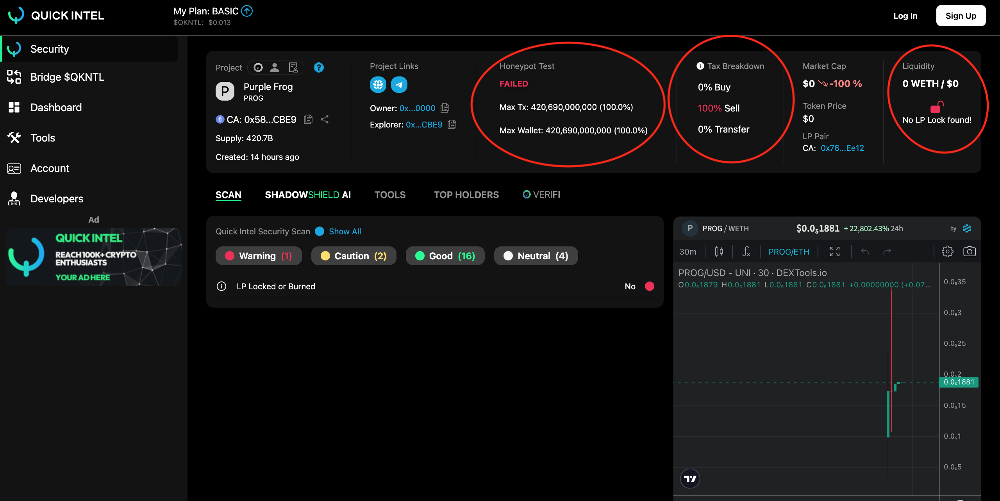

Introduction
This website contains an analysis of the PROG Token, which was found on Dextool and manually analyzed through Etherscan. Additionally, it was scanned through a crypto token contract scanner, Quick Intel. Below is a detailed breakdown of potential red flags and malicious behavior within the contract.
Red Flags in PROG Token
Red Flag 1: Hidden Buy/Sell Taxes
The contract sets buy/sell taxes at 15%, which is unusually high and indicative of a honeypot scam.
Red Flag 2: Ownership Not Truly Renounced
The contract claims to renounce ownership but allows a privileged address (_purpleforggg) to retain control over the token’s functionality.
Red Flag 3: Arbitrary Transaction Limits
The owner can remove transaction limits at any time, allowing for potential manipulation of when users can sell their tokens.
Red Flag 4: ETH Funneling to a Private Address
The swap function sends ETH to a private address during swaps, which could be used for a rug pull.
Quick Intel Analysis of Purple Frog (PROG)
- Honeypot Test: FAILED
- Liquidity: No liquidity lock found; 0 WETH in liquidity pool.
- Sell Tax: 100%, making it impossible for users to sell their tokens.
Conclusion: The combination of a failed honeypot test, no liquidity lock, and high sell tax strongly suggests this token is a honeypot scam.

Manual Analysis
After discovering the PROG token on Dextools, I manually analyzed the contract using Etherscan. Here are the key steps I followed:
- Step 1: Retrieved the token contract from Dextools and located the contract address on Etherscan.
- Step 2: Analyzed the contract functions, identifying several red flags, including hidden taxes and a fake ownership renouncement.
- Step 3: Ran the contract through Quick Intel and other token scanner websites to confirm the findings.
- Step 4: Based on the scan results, verified that the token was a honeypot scam, with no liquidity and a 100% sell tax.
Key Takeaways: This analysis confirmed that the PROG token is a honeypot scam designed to trap investors, with control retained by the contract owner despite claims of decentralization.
Conclusion
Based on my analysis, this contract has multiple red flags that could indicate a malicious or scam token, including hidden taxes, lack of true decentralization, and arbitrary control over transactions. Investors should be cautious when interacting with tokens of this nature.
By conducting this analysis, I have demonstrated my ability to:
- Manually analyze smart contracts for potential vulnerabilities.
- Use blockchain tools like Etherscan and Quick Intel.
- Understand key red flags that indicate possible scams in token contracts.